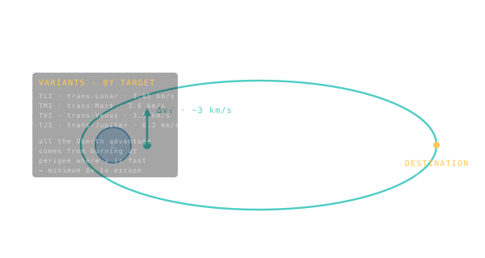

Trans-X Injection — TLI / TMI / TVI / TJI
The big departure burn that throws you onto a trajectory toward your destination.

101 · zoom in
Step one of any interplanetary trip: launch yourself to low Earth orbit. Now you're in space, but you're not going anywhere — you're just circling Earth. To actually leave for the Moon, Mars, or Jupiter, you need a SECOND burn. That's the trans-X injection. "X" is whatever planet you're aiming at. TLI = trans-lunar (to the Moon). TMI = trans-Mars. TVI = Venus. TJI = Jupiter. Same trick, different target.
It's a single, hard, dramatic burn — usually 5 to 30 minutes long depending on the engine — done at perigee of your parking orbit, where you're already moving as fast as possible (Oberth effect, again). It throws you onto the elliptical transfer that takes you to the destination. After this burn, the engine basically doesn't fire again for months. You're coasting.
On every interplanetary mission card in /missions, you'll see this number called out: ∆v_TLI or ∆v_TMI. It's THE single biggest decision in mission design — too small and you never escape Earth, too big and you waste fuel that could have flown payload. Apollo's TLI was 3.05 km/s. Mars Curiosity's TMI was 3.7 km/s. Voyager 2's trans-Jupiter injection was around 7 km/s — most of its budget.
After launch you're typically in low Earth orbit (LEO). To go anywhere else, you need a second burn that raises your apogee out to the destination — that's the trans-X injection. The X is the destination's first letter: TLI for trans-lunar, TMI for trans-Mars, TVI for trans-Venus, TJI for trans-Jupiter. Same physics, different aim point.
The burn happens at perigee of the parking orbit, where Oberth gives you the most energy per kilogram of propellant. For a Hohmann to Mars, TMI costs about 3.6 km/s on top of the LEO injection's 7.9 km/s — about a third of the total mission ∆v. Voyager 2 needed ~7 km/s for trans-Saturn injection on top of its initial trans-Jupiter departure.
On the FLIGHT tab of every interplanetary mission card in `/missions`, you'll find this number labelled ∆v_TLI or ∆v_TMI. It's the cost of leaving Earth's neighbourhood, separately from the cost of getting to LEO in the first place.
SEE IN THE APP
- /missions TLI/TMI ∆v is the first row of every interplanetary FLIGHT tab